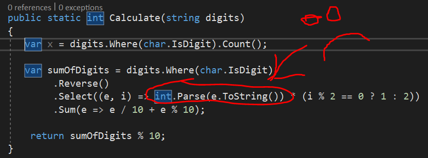

An image of your code is not helpful
When asking a question about a problem with code, people who are volunteering to help need the text of the code. Images of the code are not an acceptable substitute.

Why this is a problem
One of the first things answerers do when examining a question’s code for errors is to try compiling (if necessary) and running the code to see what happens. Answerers may also copy part of the code to paste into search engines in order to learn about the types or algorithms being used, and to find other related material. When answerers are presented only an image of code, this process becomes much more difficult.
Why this is worth a downvote
It is important to finding fast, correct answers to provide everything needed by answerers in the question. When they are forced to transcribe an image, they are wasting valuable time that could be spent analyzing the problem. In addition, errors in the transcription make it less likely that a solution to the problem can be found. Image contents cannot be searched, so future developers with the same problem will be less likely to find this question. This is even more of a problem for developers who use screen readers, as they will neither be able to help answer the question or help themselves by finding the answer to their question here.
What to do next
Edit the question. Remove the images containing code from it. Copy and paste the text of the failing code into the question. It is very important that the code is the minimum needed to reproduce the problem, and that it is well formatted. If the code consists of HTML, CSS and JavaScript, stack snippets can be taken advantage of to make the issue reproducible right in the question! This makes it much easier to see code problems and to provide fixes quickly.
An example of well formatted code with comments explaining any issues:
public static int Calculate(string digits)
{
//Issue: x is 6 should be 5
var x = digits.Where(char.IsDigit).Count();
var sumOfDigits = digits.Where(char.IsDigit)
.Reverse()
.Select((e, i) => int.Parse(e.ToString()) * (i % 2 == 0 ? 1 : 2))
.Sum(e => e / 10 + e % 10);
//Error: sumOfDigits is returning 100 should be 600
return sumOfDigits % 10;
}